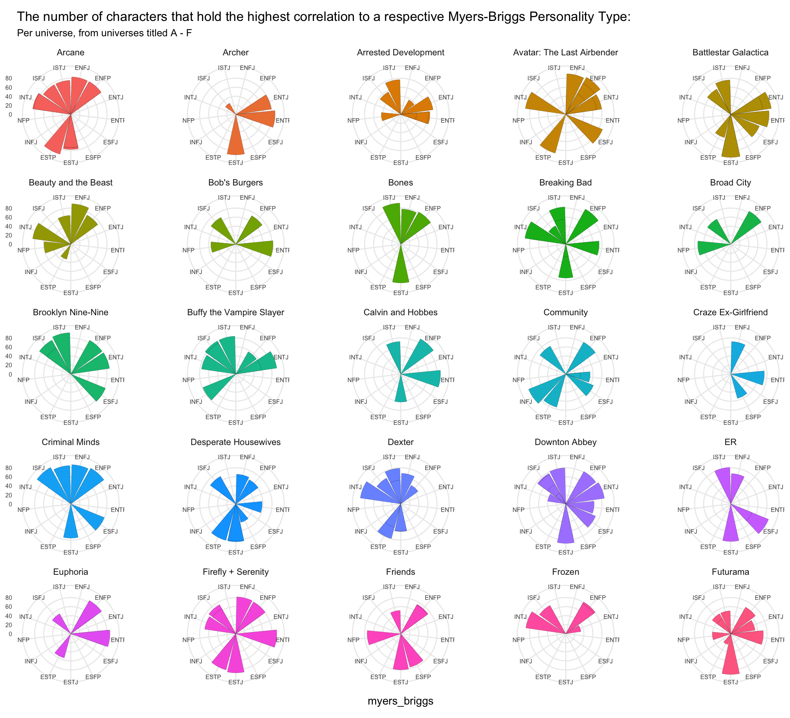
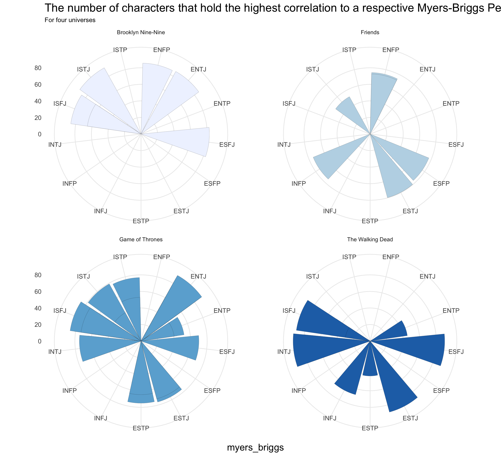
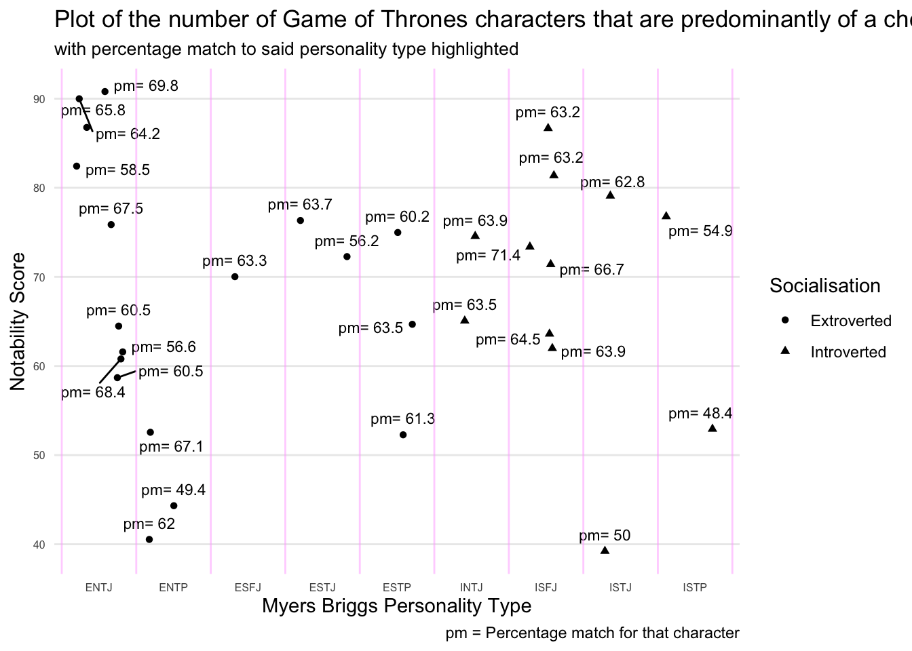
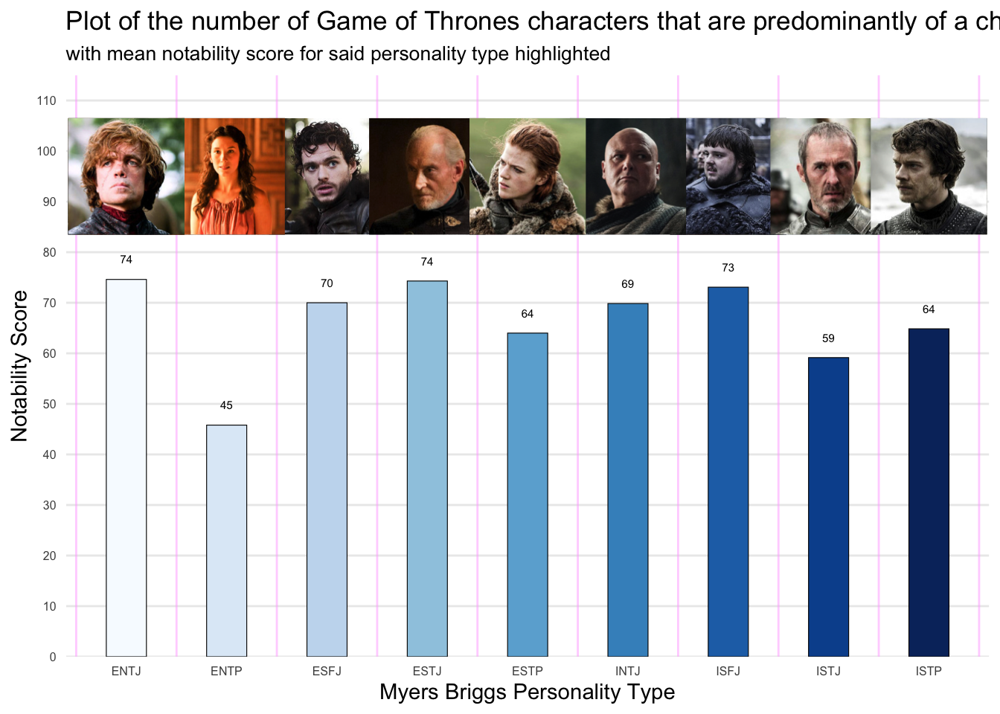

if (!require("pacman")) install.packages("pacman")# use this line for installing/loadingpacman::p_load(devtools) pacman::p_load(tidyverse, openintro, gtable, ggrepel, patchwork, units, readr, gt, gganimate, gifski, png, ggplot2, ggh4x, ggrepel, ggridges)
Abstract
The Psychometrics Analysis Project offers a diverse array of interactive Myer Brigs personality tests for fictional characters designed for personal entertainment, these tests aim to provide insights into various aspects of personality assessment It’s primary focus is on presenting the types defined by ISTJ and ENFP by understanding these personalities types individuals can gain insights into their own behaviors, preferences and interpersonal dynamics the key traits are associated with each type, emphasizing the diverse ways in which individual interact with the world based on the personality prefrences.
Introduction
This project leverages data collected by the Open-Source Pyschometrics Project to reveal the relationship between popular culture and psychology. Through non-orthodox data analysis methods, 890 characters from 100 different universes could be compared and contrasted for their personalities. Each fictional universe denotes a different tv show or movie with popular characters within. While the characters used are fictional, the methods produced by this project will be re-usable and, in theory, applicable to collections of real-world people.
Question 1:
How do Myers-Briggs personality types distribute across different universes, and how does the average match percentage vary within each universe? Additionally, is there any correlation between character notability scores and their Myers-Briggs types within each universe?
Introduction
Question one is primarily an exploration of the varying personality types that exist across cultural media. It looks to investigate the differences in character personalities and motivations across differing universes, potentially identifying correlations between genres or settings. Additionally, an attempt to uncover a relationship between popular opinion of characters and their in-universe personas will be made: are anti-heroes liked more? Are villains viewed more negatively than heroes? These questions will be answered providing information about the prevalence and celebration of particular personality types, which enhance our comprehension of audience engagement and storytelling dynamics.
Approach
Initially the dataset was loaded from the "TidyTuesday" source using the read.csv function in R. The date and location columns were verified to ensure that they are in the correct data types. The dataset containing information about characters is where the Data Collected to visualise various universes and their personality traits from the Open Psychometrics Project website (or you can provide the link), By exploring the data and examining the structure of the dataset to understand its variables and general content. This includes inspecting the Characters, Psychology Stats, and Myers-Briggs tables which performs preprocessing of any necessary data steps, such as handling missing values, data type conversion, and cleaning up variable names Moreover, one of it could be exploring data analysis, distribution of character notability scores across different universes, inquire the distribution of personality traits among characters, including the most common traits and any notable patterns or trends analyzing the average ratings and standard deviations of personality traits to understand the variability within each trait, Exploring the distribution of Myers-Briggs personality types across characters and universes examining the percentage match of Myers-Briggs types and the number of user respondents for each character. To create visualizations to represent key findings from the exploring of data analysis. This could include bar plots, scatter plots, and radar plots to visualize distributions, correlations, and patterns with the notability scores for different types of Myer Briggs personality type, Through interpretation of statistical analysis tests to determine if there are momentous differences in character notability scores between universes there have been some statistical tests conducted to determine each character notability scores and personaltiy traits for Myers-Briggs types.
Code
#plotA <- ggplot(data = myers_briggs) + geom_density(aes( group = uni_name, x = avg_match_perc, ))#plotA#unique(myers_briggs$uni_name)pacman::p_load(viridis, RColorBrewer)pacman::p_load(magick, nflplotR)pacman::p_load(RColorBrewer)myers_briggs_grouped <- myers_briggs %>%group_by(char_name) %>%#summarise(max = max(avg_match_perc, na.rm=TRUE))slice_max(avg_match_perc)# introverted versus extroverted; sensing versus intuitive; thinking versus feeling; and perceiving versus judging.myers_briggs_grouped <- myers_briggs_grouped %>%mutate(socialisation =case_when(substr(myers_briggs, 1, 1) =="E"~"Extroverted",substr(myers_briggs, 1, 1) =="I"~"Introverted" ),empiricism =case_when(substr(myers_briggs, 2, 2) =="N"~"Intuitive",substr(myers_briggs, 2, 2) =="S"~"Sensing" ) )myers_briggs_linked <-left_join(myers_briggs_grouped, characters, by=c("char_name"="name", "char_id"="id", "uni_id"="uni_id", "uni_name"="uni_name"))myers_briggs_linked <- myers_briggs_linked %>%arrange(by = uni_name)myersBriggsUniversePlot1 <-ggplot(myers_briggs_linked[starts_with(LETTERS[1:6], vars=myers_briggs_linked$uni_name),]) +geom_col(aes(x = myers_briggs, y = notability, fill = uni_name), size=.8, position=position_dodge()) +theme(axis.title.y =element_blank(), axis.text =element_text(size=6), panel.grid.minor=element_blank(), title =element_text(size=11), plot.subtitle =element_text(size=10), plot.background =element_rect(color ="white"), legend.text =element_blank(), legend.position ="none", panel.spacing.x =unit(4, "lines"), strip.clip ="off") +scale_y_continuous(breaks = scales::breaks_width(20)) +labs(title="The number of characters that hold the highest correlation to a respective Myers-Briggs Personality Type: ", subtitle="Per universe, from universes titled A - F") +coord_polar() +facet_wrap2(vars(uni_name))myersBriggsUniversePlot2 <-ggplot(myers_briggs_linked[starts_with(LETTERS[7:13], vars=myers_briggs_linked$uni_name),]) +geom_col(aes(x = myers_briggs, y = notability, fill = uni_name), size=.8, position=position_dodge()) +theme(axis.title.y =element_blank(), axis.text =element_text(size=6), panel.grid.minor=element_blank(), title =element_text(size=11), plot.subtitle =element_text(size=10), plot.background =element_rect(color ="white"), legend.text =element_blank(), legend.position ="none", panel.spacing.x =unit(4, "lines"), strip.clip ="off") +scale_y_continuous(breaks = scales::breaks_width(20)) +labs(title="The number of characters that hold the highest correlation to a respective Myers-Briggs Personality Type: ", subtitle="Per universe, from universes titled G - M") +coord_polar() +facet_wrap2(vars(uni_name))myersBriggsUniversePlot3 <-ggplot(myers_briggs_linked[starts_with(LETTERS[14:19], vars=myers_briggs_linked$uni_name),]) +geom_col(aes(x = myers_briggs, y = notability, fill = uni_name), size=.8, position=position_dodge()) +theme(axis.title.y =element_blank(), axis.text =element_text(size=6), panel.grid.minor=element_blank(), title =element_text(size=11), plot.subtitle =element_text(size=10), plot.background =element_rect(color ="white"), legend.text =element_blank(), legend.position ="none", panel.spacing.x =unit(4, "lines"), strip.clip ="off") +scale_y_continuous(breaks = scales::breaks_width(20)) +labs(title="The number of characters that hold the highest correlation to a respective Myers-Briggs Personality Type: ", subtitle="Per universe, from universes titled N - S") +coord_polar() +facet_wrap2(vars(uni_name))myersBriggsUniversePlot4 <-ggplot(myers_briggs_linked[starts_with(LETTERS[20:26], vars=myers_briggs_linked$uni_name),]) +geom_col(aes(x = myers_briggs, y = notability, fill = uni_name), size=.8, position=position_dodge()) +theme(axis.title.y =element_blank(), axis.text =element_text(size=6), panel.grid.minor=element_blank(), title =element_text(size=11), plot.subtitle =element_text(size=10), plot.background =element_rect(color ="white"), legend.text =element_blank(), legend.position ="none", panel.spacing.x =unit(4, "lines"), strip.clip ="off") +scale_y_continuous(breaks = scales::breaks_width(20)) +labs(title="The number of characters that hold the highest correlation to a respective Myers-Briggs Personality Type: ", subtitle="Per universe, from universes titled T - Z") +coord_polar() +facet_wrap2(vars(uni_name))ggsave("data/universePlot.png", myersBriggsUniversePlot1, width =20, height =15, units =c("in"))ggsave("data/universePlot2.png", myersBriggsUniversePlot2, width =20, height =15, units =c("in"))ggsave("data/universePlot3.png", myersBriggsUniversePlot3, width =20, height =15, units =c("in"))ggsave("data/universePlot4.png", myersBriggsUniversePlot4, width =20, height =15, units =c("in"))notabilityScores_TheWalkingDead <-ggplot(myers_briggs_linked[myers_briggs_linked$uni_name %in%c("The Walking Dead"),], aes()) +theme_minimal() +geom_jitter(aes(x = myers_briggs, y = notability, pch=socialisation), position =position_jitter(seed=3)) +theme(plot.background =element_rect(color ="white"), axis.text =element_text(size=6), panel.grid.minor.y=element_blank(), title =element_text(size=11), plot.subtitle =element_text(size=10), axis.text.x =element_text(), panel.grid.major.x =element_blank()) +scale_y_continuous(breaks = scales::breaks_width(10)) +labs(title="Plot of the number of characters that are\npredominantly of a chosen personality type: ", subtitle="From The Walking Dead universe, with percentage match to said personality type highlighted", x ="Myers Briggs Personality Type", y ="Notability Score", caption="pm = Percentage match for that character", pch ="Socialisation") +geom_text_repel( aes( label=paste("pm=",avg_match_perc), x = myers_briggs, y = notability), size=3, vjust=-1, position =position_jitter(seed=3)) +geom_vline(xintercept=seq(0.5,after_stat(nrow(myers_briggs)),1),color="#FFAAFF", alpha = .5)notabilityScores_TheWalkingDead

Code
notabilityMeans_TheWalkingDead <-ggplot(filter(myers_briggs_linked, uni_name =="The Walking Dead"), aes(group = myers_briggs, x = myers_briggs)) +theme_minimal() +geom_bar(aes( y = notability, fill = myers_briggs), width=.4, stat="summary", fun="mean", colour="black", size =0.2) +theme(plot.background =element_rect(color ="white"), panel.grid.minor.y=element_blank(), title =element_text(size=11), plot.subtitle =element_text(size=10), axis.text =element_text(size=6), panel.grid.major.x =element_blank(), legend.position ="none") +scale_y_continuous(breaks = scales::breaks_width(10), expand =expand_scale(c(0,0), c(0,35))) +labs(title="Plot of the number of characters that are\npredominantly of a chosen personality type: ", subtitle="From The Walking Dead universe, with mean notability score for said personality type highlighted", x ="Myers Briggs Personality Type", y ="Notability Score") +geom_vline(xintercept=seq(0.5,after_stat(nrow(myers_briggs)),1),color="#FFAAFF", alpha = .5) +stat_summary(geom="text", fun ="mean", aes(label=floor(after_stat(y)), x = myers_briggs, y = notability), size =2, vjust=-2) +geom_from_path(aes(x = myers_briggs, y=95, path = image_link, group=myers_briggs), width = .2, height = .2, vjust=-.2) +scale_fill_brewer(palette ="YlOrBr")notabilityMeans_TheWalkingDead

Code
notabilityScores_GameOfThrones <-ggplot(myers_briggs_linked[myers_briggs_linked$uni_name %in%c("Game of Thrones"),], aes()) +theme_minimal() +geom_jitter(aes(x = myers_briggs, y = notability, pch=socialisation), position =position_jitter(seed=3)) +theme(plot.background =element_rect(color ="white"), axis.text =element_text(size=6), panel.grid.minor.y=element_blank(), title =element_text(size=11), plot.subtitle =element_text(size=10), axis.text.x =element_text(), panel.grid.major.x =element_blank()) +scale_y_continuous(breaks = scales::breaks_width(10)) +labs(title="Plot of the number of characters that are\npredominantly of a chosen personality type: ", subtitle="From the Game of Thrones universe, with percentage match to said personality type highlighted", x ="Myers Briggs Personality Type", y ="Notability Score", caption="pm = Percentage match for that character", pch ="Socialisation") +geom_text_repel( aes( label=paste("pm=",avg_match_perc), x = myers_briggs, y = notability), size=3, vjust=-1, position =position_jitter(seed=3)) +geom_vline(xintercept=seq(0.5,after_stat(nrow(myers_briggs)),1),color="#FFAAFF", alpha = .5)notabilityScores_GameOfThrones

Code
notabilityMeans_GameOfThrones<-ggplot(filter(myers_briggs_linked, uni_name =="Game of Thrones"), aes(group = myers_briggs, x = myers_briggs)) +geom_bar(aes( y = notability, fill = myers_briggs), width=.4, stat="summary", fun="mean", colour="black", size =0.2) +theme_minimal() +theme(plot.background =element_rect(color ="white"), panel.grid.minor.y=element_blank(), title =element_text(size=11), plot.subtitle =element_text(size=10), axis.text =element_text(size=6), panel.grid.major.x =element_blank(), legend.position ="none") +scale_y_continuous(breaks = scales::breaks_width(10), expand =expand_scale(c(0,0), c(0,20))) +labs(title="Plot of the number of characters that are\npredominantly of a chosen personality type: ", subtitle="From the Game of Thrones universe, with mean notability score for said personality type highlighted", x ="Myers Briggs Personality Type", y ="Notability Score") +geom_vline(xintercept=seq(0.5,after_stat(nrow(myers_briggs)),1),color="#FFAAFF", alpha = .5) +stat_summary(geom="text", fun ="mean", aes(label=floor(after_stat(y)), x = myers_briggs, y = notability), size =2, vjust=-2) +geom_from_path(aes(x = myers_briggs, y=95, path = image_link, group=myers_briggs), width = .2, height = .2) +scale_fill_brewer(palette ="Blues")notabilityMeans_GameOfThrones

Code
ggsave("data/notabilityScores_TheWalkingDead.png", notabilityScores_TheWalkingDead, width =9, height =5, units =c("in"))ggsave("data/notabilityMeans_TheWalkingDead.png", notabilityMeans_TheWalkingDead, width =9, height =5, units =c("in"))ggsave("data/notabilityScores_GameOfThrones.png", notabilityScores_GameOfThrones,width =9, height =5, units =c("in"))ggsave("data/notabilityMeans_GameOfThrones.png", notabilityMeans_GameOfThrones, width =9, height =5, units =c("in"))
Code
myers_briggs_mean_notability <- myers_briggs_linked %>%group_by(uni_name, myers_briggs) %>%summarise(mean =mean(notability),socialisation = socialisation,empiricism = empiricism ) %>%filter(mean ==max(mean))#g11 <- ggplot(myers_briggs_mean_notability) + geom_bar(aes(x = myers_briggs, fill = myers_briggs)) + theme( panel.grid.minor.y=element_blank(), title = element_text(size=11), plot.subtitle = element_text(size=10), axis.text = element_text(size=6), panel.grid.major.x = element_blank(), legend.position = "none") + scale_y_continuous(breaks = scales::breaks_width(2), expand = expand_scale(c(0,0), c(0,4))) + labs(title="Count of the myers-briggs type correlated to the highest mean notability scores", subtitle="From every universe", x = "Myers Briggs Personality Type", y = "Count") + geom_text( aes( label=after_stat(count), x = myers_briggs, y = after_stat(count)), vjust=-1, size = 3, stat="count")#g11myers_briggs_mean_notability <- myers_briggs_mean_notability %>%mutate(Network =case_when( uni_name %in%c("Game of Thrones", "True Detective", "Euphoria", "The Sopranos", "Westworld", "The Wire", "Watchmen", "Succession", "Silicon Valley") ~"HBO", uni_name %in%c("Breaking Bad", "Better Call Saul", "Mad Men", "The Walking Dead", "") ~"AMC",TRUE~"Other" ))myers_briggs_grouped_notability <- myers_briggs_linked %>%group_by(uni_name, myers_briggs) %>%summarise(notability = (notability),socialisation = socialisation,empiricism = empiricism )myers_briggs_grouped_notability <- myers_briggs_grouped_notability %>%mutate(Network =case_when( uni_name %in%c("Game of Thrones", "True Detective", "Euphoria", "The Sopranos", "Westworld", "The Wire", "Watchmen", "Succession", "Silicon Valley") ~"HBO", uni_name %in%c("Breaking Bad", "Better Call Saul", "Mad Men", "The Walking Dead") ~"AMC",TRUE~"Other" ))g12 <-ggplot(myers_briggs_grouped_notability) +geom_bar(aes(x = myers_briggs, fill = Network, y = notability), stat="summary", fun ="mean", position =position_dodge(.9), width = .5, colour="black", size =0.2) +theme_minimal() +theme(plot.background =element_rect(color ="white"), panel.grid.minor.y=element_blank(), title =element_text(size=11), plot.subtitle =element_text(size=10), axis.text =element_text(size=9), panel.grid.major.x =element_blank(), ) +scale_y_continuous(breaks = scales::breaks_width(10), expand =expand_scale(c(0,0), c(0,4))) +labs(title="Count of the myers-briggs type correlated to\nthe highest mean notability scores", subtitle="From every universe", x ="Myers Briggs Personality Type", y ="Mean notability") +facet_wrap2(vars(socialisation), scales ="free_x", nrow =2) +scale_fill_brewer(palette ="YlOrRd") +scale_x_discrete(expand=(c(.1,.1))) +geom_vline(xintercept=seq(0.5,after_stat(nrow(myers_briggs)),1),color="#FFAAFF", alpha = .5)g12
What is the frequency distribution of character personality traits across all characters, and how does it correlate with their average rating? Furthermore, do character notability scores vary significantly based on their personality traits?
Introduction
Intriguing insights into the dynamics of character perception and storytelling impact can be gained by examining the frequency distribution of personality qualities in characters and how they relate to average ratings. One could explore whether a character that is commonly perceived as honourable or righteous has a resonance with the audience, or even a more fulfilling character arc. Tying this to the real-world it could be utilised to determine whether traits such as lazy correlate to a lesser perception of an individual from their peers.
Approach
To address these problems comprehensively, we will conduct a multifaceted analysis of the Psychometrics Project dataset. Initially, we will scrutinize the frequency distribution of character personality traits across the entire dataset. This examination will involve quantifying the occurrence of each personality trait and visualizing the distribution using appropriate graphical representations, such as bar charts or radar charts.Subsequently, we will delve into exploring the correlation between character personality traits and their average ratings. This analytical pursuit necessitates calculating the correlation coefficient to ascertain the degree of association between personality trait scores and average ratings. Visualization techniques, such as scatter plots coupled with regression analysis, will aid in elucidating the nature and strength of this correlation, we will investigate the potential variability of character notability scores contingent upon their respective personality traits. Employing statistical methodologies( write what methods did you use)Moreover, we will assess whether there exist significant differences in notability scores across distinct personality trait categories. Visual aids such as density plots and bar plots will complement this analysis, providing clear illustrations of any discernible variations in notability scores among different personality trait cohorts. By meticulously examining these facets of the dataset, we aim to derive profound insights into the interplay between character personality traits, average ratings, and notability scores. Such insights hold the dynamics underlying character portrayal and reception within the dataset, thereby contributing to a deeper understanding of human behavior and perception in the context of fictional character depiction.
Code
characters$char_id = characters$idpsych_stats$personality_category <-sapply(psych_stats$personality, categorize_personality)personalityDistribution <- psych_stats |>count(personality_category)personalityDistribution =subset(personalityDistribution, personality_category !="Unknown")charactersFiltered = characters |>select(char_id, notability)psychStatsFiltered = psych_stats |>select(char_id, personality_category, avg_rating)psychStatsCharacters =merge(charactersFiltered, psychStatsFiltered, by ="char_id")psychStatsCharactersSubset =subset(psychStatsCharacters, personality_category !="Unknown")avgRating = psychStatsCharacters |>group_by(personality_category) |>summarise(avg_rating =mean(avg_rating))avgNotability = psychStatsCharacters |>group_by(personality_category) |>summarise(avg_notability =mean(notability))psychStatsCharactersMerged =merge(personalityDistribution, avgRating, by ="personality_category")psychStatsCharactersMerged =merge(psychStatsCharactersMerged, avgNotability,by ="personality_category")personalityDistribution <-subset(personalityDistribution, personality_category !="Unknown")avgRating <-subset(avgRating, personality_category !="Unknown")avgNotability <-subset(avgNotability, personality_category !="Unknown")question2Part1Plot1 =ggplot(personalityDistribution, aes(x =factor(fct_rev(fct_inorder(personality_category))), y = n)) +geom_bar(stat ="identity", aes(fill=(personality_category)), color ="black") +scale_fill_brewer(palette ="Reds") +labs(title ="Frequency distribution of character personality traits",x ="Personality Traits",y ="Frequency") +coord_flip() +theme_minimal()+theme(axis.text.x =element_text( hjust =1),plot.title =element_text(hjust =0.5), legend.position ="none", plot.background =element_rect(color ="white")) +geom_label(aes(x=(factor(fct_rev(fct_inorder(personality_category)))), y = n, label=floor(n), hjust =ifelse(personality_category=="Intellectual Traits",1.2, -.1)), , color ="black", alpha = .7)question2Part1Plot2 =ggplot(avgRating, aes(x =factor(fct_rev(fct_inorder( personality_category))), y = avg_rating)) +geom_bar(stat ="identity", aes(fill = (personality_category)), color ="black") +labs(title ="Average rating by character personality traits",x ="Personality Traits",y ="Average Rating") +coord_flip() +theme_minimal() +scale_fill_brewer(palette ="YlOrBr")+theme(axis.text.x =element_text(hjust =1),plot.title =element_text(hjust =0.5), legend.position ="none", plot.background =element_rect(color ="white")) +geom_label(aes(x = (factor(fct_rev(fct_inorder( personality_category)))), y = avg_rating, label =floor(avg_rating)), hjust =2.5, color ="black", alpha = .7)question2Part2Plot =ggplot(avgNotability, aes(x =factor(fct_rev(fct_inorder(personality_category))), y = avg_notability)) +geom_bar(stat ="identity", aes(fill= (personality_category)), color ="black") +labs(title ="Average notability by character personality traits",x ="Personality Traits",y ="Average Notability") +coord_flip() +theme_minimal() +scale_fill_brewer(palette ="Purples")+theme(axis.text.x =element_text( hjust =1),plot.title =element_text(hjust =0.5), legend.position ="none", plot.background =element_rect(color ="white")) +geom_label(aes(x=(factor(fct_rev(fct_inorder(personality_category)))), y = avg_notability, label=floor(avg_notability)), hjust =2.5, color ="black", alpha = .7)question2Part1Plot3 =ggplot(psychStatsCharactersSubset, aes(x = avg_rating, y =factor(fct_rev((personality_category))))) +geom_density_ridges(aes(fill =factor(fct_rev(personality_category))), alpha = .6) +theme_minimal() +theme(legend.position ="none", plot.background =element_rect(color="white")) +labs(title="Density ridges plot of grouped personality traits", x="Average Rating", y="Grouped Personality Traits") +scale_fill_brewer(palette ="Greens") +geom_vline(xintercept=100 ,color="black", alpha = .7, linetype ="dashed")# old plot q2p2oldPlot =ggplot(psychStatsCharactersSubset, aes(x = avg_rating)) +geom_density(aes(fill = personality_category), alpha = .7) +facet_wrap(~personality_category, dir ="v") +theme_minimal() +scale_fill_brewer(palette ="Greens") +scale_y_continuous(breaks =seq(0,0.04, 0.04)) +theme(legend.position ="none", axis.text.x=element_text(angle =c(45,rep(0,4),45))) +labs(title="Density plot of grouped personality traits", x="Average Rating", y="Density")# saving the plots in pngggsave("images/question2Part1Plot1.png", question2Part1Plot1, width =9, height =5, units =c("in"))ggsave("images/question2Part1Plot2.png", question2Part1Plot2, width =9, height =5, units =c("in"))ggsave("images/question2Part1Plot3.png", question2Part1Plot3, width =9, height =5, units =c("in"))ggsave("images/question2Part2Plot1.png", question2Part2Plot, width =9, height =5, units =c("in"))question2Part1Plot1